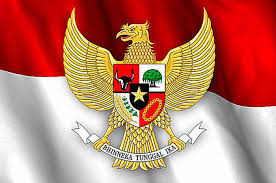

Kerjasama Internasional: Pancasila
- Pancasila adalah nilai yang sudah menjadi jati diri bangsa kita, bangsa Indonesia. Nilai Pancasila sudah mencerminkan nilai-nilai yang dibutuhkan oleh kita dikehidupan sehari-hari. Pada terjadinya kerjasama internasional, baik kerjasama bilateral, regional, dan multilateral, ada baiknya kita sadari bahwa nilai Pancasila sangat perlu diterapkan, dalam prespektif saya sendiri, dalam materi web kerjasama internasional ini nilai Pancasila yang di terapkan yaitu Sila ke-2 dan Sila ke-5. Nilai sila kedua Pancasila, yaitu Kemanusiaan yang Adil dan Beradab, tercermin dalam kerjasama internasional melalui berbagai bentuk tindakan yang menjunjung tinggi hak asasi manusia dan keadilan. Dalam kerjasama bilateral, Indonesia menunjukkan kepedulian terhadap sesama, seperti dengan memberikan bantuan kemanusiaan kepada negara-negara yang terdampak bencana alam. Pada kerjasama regional, nilai ini terlihat dalam partisipasi Indonesia di ASEAN melalui program ASEAN Disaster Management and Emergency Response (ADMER) untuk membantu negara-negara anggota yang terkena bencana. Dalam kerjasama multilateral, Indonesia aktif mendukung program Perserikatan Bangsa-Bangsa (PBB) untuk menciptakan perdamaian dunia dan memberikan perlindungan bagi pengungsi. Semua ini menunjukkan bahwa Indonesia menjunjung nilai kemanusiaan yang menghormati martabat setiap individu di tingkat global.
- Sementara itu, sila kelima, yaitu Keadilan Sosial bagi Seluruh Rakyat Indonesia, diterapkan melalui berbagai upaya untuk menciptakan keadilan dan kesejahteraan dalam kerjasama internasional. Dalam kerjasama bilateral, Indonesia bersama negara seperti Jepang mengembangkan infrastruktur yang bermanfaat bagi seluruh rakyat, seperti jalan dan jembatan untuk mempercepat pembangunan. Pada tingkat regional, Indonesia aktif dalam ASEAN Free Trade Area (AFTA) yang bertujuan meningkatkan kesejahteraan seluruh anggota melalui perdagangan yang adil. Di tingkat multilateral, Indonesia bekerja sama dengan Bank Dunia untuk mendukung proyek pengentasan kemiskinan dan pemberdayaan masyarakat di pedesaan. Nilai ini menunjukkan bahwa Indonesia tidak hanya fokus pada kepentingan nasional, tetapi juga berusaha menciptakan keadilan sosial secara global.
